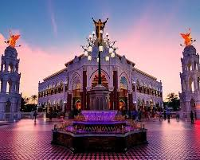
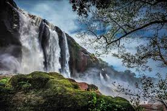
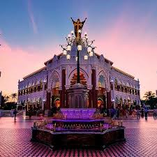
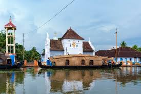
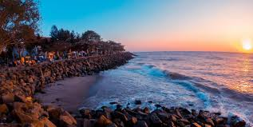
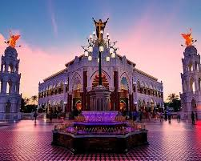
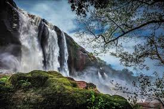
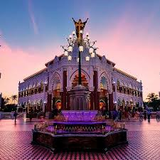
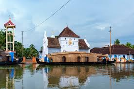
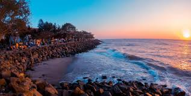

Chinese fishing nets
Iconic waterfront installations with daily sunset views.
Kochi blends Kerala’s heritage, coastal atmosphere and modern cafes. Fort Kochi and Mattancherry are compact, walkable neighborhoods with colonial buildings, street art, churches, a synagogue and waterfront views.
The city is also the most convenient starting point for backwaters (Alleppey), the tea hills of Munnar and Southern Kerala beaches. It works both as a base and a slow-travel destination.
Iconic waterfront installations with daily sunset views.
Cafes, murals, art galleries and slow-paced colonial lanes.
Synagogue, antique shops and spice markets.
India’s biggest contemporary art festival (seasonal).
Churches, murals, cafes and the relaxed waterfront promenade.
Classic Kochi scene with silhouettes and vendors.
Cheap, quick way to view Kochi’s skyline and shipping port.
Useful as a start or end point for Kerala trips.
Short stop
Slow and easy
3–4 days
Heritage hotels, cafes and walkable attractions.
Best for first-time visitors.
Budget stays, malls and easy transport.
Good for quick transit stays.
Quiet boutique stays with harbour views.
Ideal for slow-paced trips.

 










Easy ways to enjoy the city without rush.